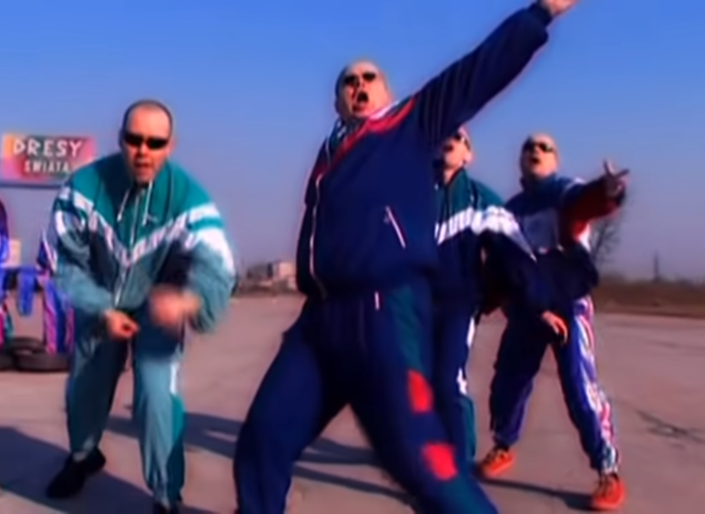
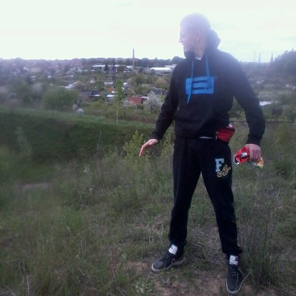
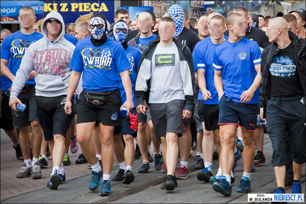
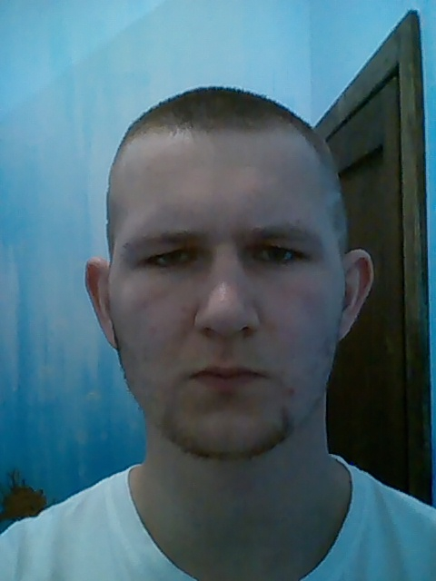

Strona o stroju uczniowskim Śląskich Technicznych Zakładów Naukowych w Katowicach
Uważam, że każdy powinien być ubrany w dres tzw. patusiarsko.
Strój ortalionowy

Strój dresowy

Strój klubowy

Najważniejsza jest fryzura
